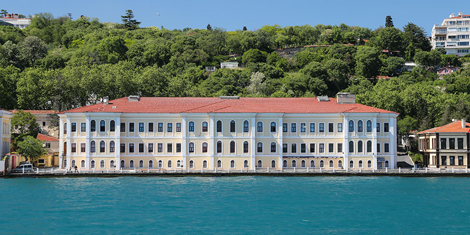
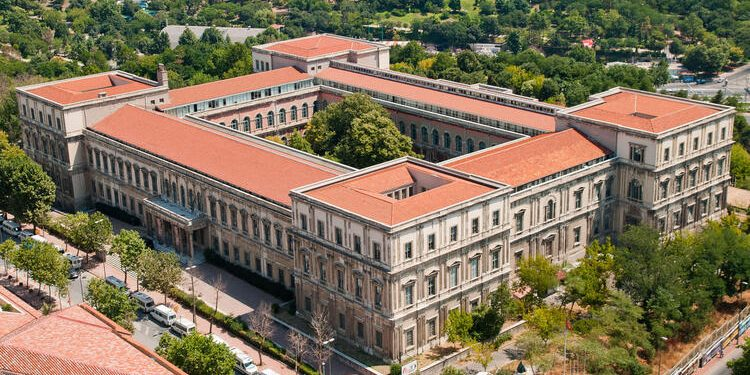

Times Higher Education (THE) Dünya Üniversite Sıralaması'na göre 2018'de bölgesel (Asya) sıralaması 67 olan Boğaziçi, 2019'da 88'e, 2020'de 138'e, 2021'de 167'ye kadar geriledi. Boğaziçi'nin, QS Dünya Üniversiteleri Sıralaması'na göre de bölgesel (Asya) sıralaması 2021'de 189'a düştü. Boğaziçi, 2018'de 113. sıradaydı.
Boğaziçi Üniversitesi’nin vizyonu eğitim, öğretim ve araştırmada öncü konumuyla geleceği şekillendiren bir üniversite olmaktır. Eğitim ve öğretim deneyimini yenilikçi ve yaratıcı yaklaşımlarla zenginleştirmek, Bilim, araştırma, yaratıcılık, yenilikçilik kültürünü güçlendirerek dünyanın lider araştırma üniversiteleri arasında yer almak, Akademik, bilimsel ve kültürel faaliyetlerimizle daha iyi bir geleceğin şekillenmesine katkıda bulunmak vizyonumuzun ana öğelerini oluşturmaktadır.
Konum Linki Galatasaray Üniversitesi
Türkiye'nin en prestijli ve en çok hayali kurulan üniversitelerinden biridir Galatasaray Üniversitesi. Muhteşem bir yerleşkeye sahiptir, öğretim dili Fransızcadır. Akademik kadrosu içerisinde saygı duyulan isimler vardır ve okulda okuma hakkı kazanmak oldukça zorlayıcıdır.
Galatasaray Üniversitesi, her yıl kontenjanının %50’sini ÖSYM tarafından yapılan Öğrenci Seçme ve Yerleştirme Sınavlarında başarılı olan öğrencilere, %25‘ini Galatasaray Lisesi mezunu olup GSÜÖSYS sınavında başarılı olan öğrencilere, %25‘ini Türkiye’de Fransızca öğretim yapan okulların aynı durumdaki öğrencilerine ayırmaktadır.
Konum Linki İstanbul Teknik Üniversitesi
Uluslararası saygın ve bağımsız bir değerlendirme kuruluşu olan QS World University Ranking 2010 yılı verilerine göre (www.topuniversities.com) İTÜ, mühendislik ve teknoloji alanında dünya genelinde 129. sırada ve Türkiye'de de 1. sırada yer aldı.
1773’ten beri İTÜ; bilgide derinleşme, keşfederek yeniliklere ilham verme ve insanlığı ileri taşıma başarısını temsil ediyor.
İstanbul Teknik Üniversitesi’nin varlık nedeni bilim, teknoloji ve sanatta bilginin sınırlarını genişletmek ve uygulamaları ile toplumun ihtiyaçlarına cevap vermektir.
Konum Linki